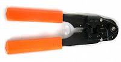
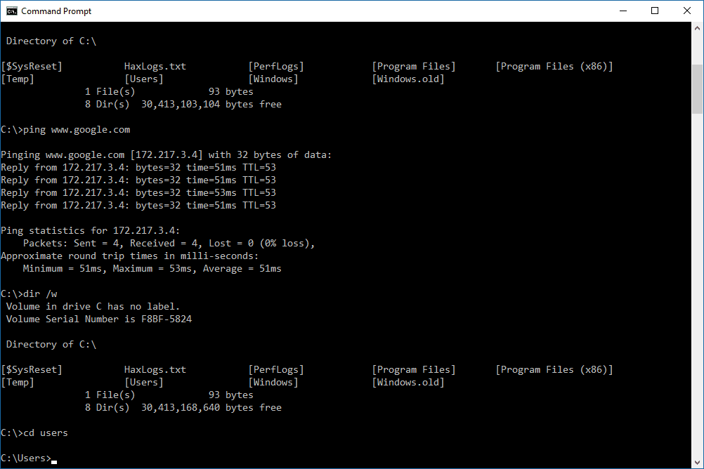
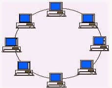
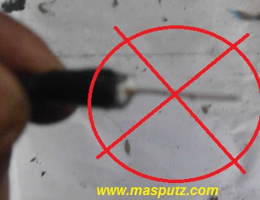

Urutan Pemasangan Kabel UTP
Tang Krimping (crimping tools), ini adalah alat untuk mejepit kabel UTP ke konektor RJ45
Learn More...

[DOS/BATCH] Fungsi & Perintah CMD
Tentunya diantara kalian banyak yang bertanya-tanya, dan tidak tau secara pasti. apa itu code CMD dan fungsinya seperti apa
Learn More...

TOPOLOGI JARINGAN KOMPUTER
Topologi jaringa komputer adalah macam cara atau konsep untuk menghubungkan beberapa
Learn More...>/p>

MEMASANG KABEL COAXIAL PADA KONEKTOR LNB
Konektor LNB merupakan salah satu alat yang harus ada untuk menghubungkan LNB dengan Switch
Learn More...
TOPOLOGI JARINGAN KOMPUTER
Topologi jaringa komputer adalah macam cara atau konsep untuk menghubungkan beberapa atau banyak komputer sekaligus menjadi suatu jaringan yang saling terkoneksi. Dan setiap macam topologi jaringan komputer akan
Learn More...
URUTAN PASANG KABEL UTP
Peralatan yang harus ada sebelum kamu melakukan pengkabelan UTP. Tang Krimping (crimping tools), ini adalah alat untuk mejepit kabel UTP ke konektor RJ45. Pastikan anda mempunyai tang krimping ini yang diperuntukan untuk konektor RJ45,
Learn More...